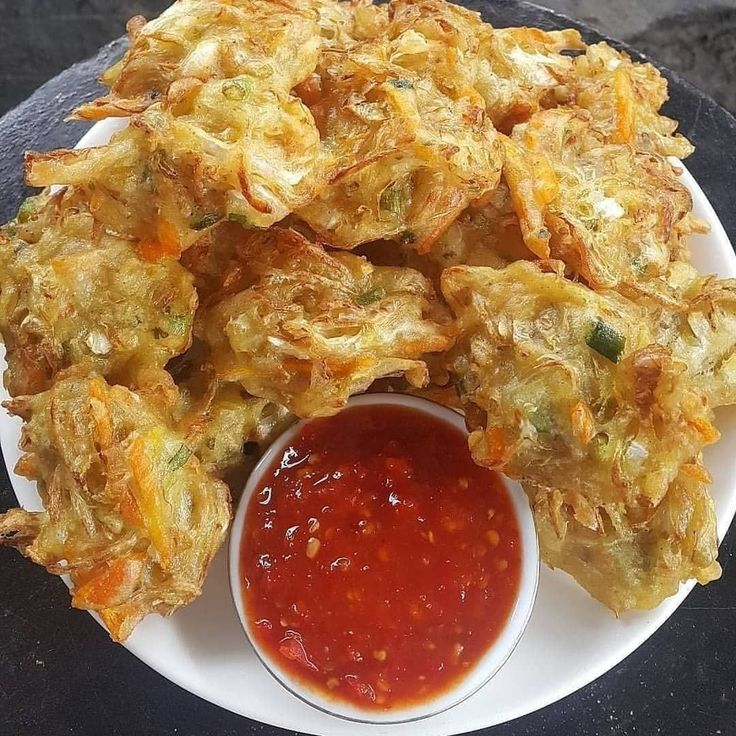

BAKWAN JAGUNG

Resep Bakwan Jagung :
Bahan-Bahan
- 250 jagung segar
- 100 gram tepung terigu
- 1 butir telur ayam
- 100 ml santan encer
- 100 ml santan encer
- 1 buah cabai merah
- Daun seledri
- Minyak secukupnya untuk menggoreng
-
Haluskan 2 sdm bawang merah, bawang putih,
1 sdt ketumbar, dan 1 sdt garam
Cara Membuat
-
Campur jagung sisir, tepung terigu, telur ayam,
santan, cabai, daun seledri, gula pasir, dan bumbu halus aduk rata.
-
Panaskan wajan beri minyak goreng untuk menggoreng bakwan
jagungnya.
Nyalakan api sedang dan jangan terlalu besar.
-
Setelah minyak panas tuangi adonan bakwan jagung.
Diamkan sampai adonan setengah kering jika sudah baru balik.
-
Tips agar bakwan jagung renyah, pastikan saat menggoreng
adonan
bakwan jagung terendam seluruhnya dalam minyak. Namun minyak tak boleh
terlalu banyak.